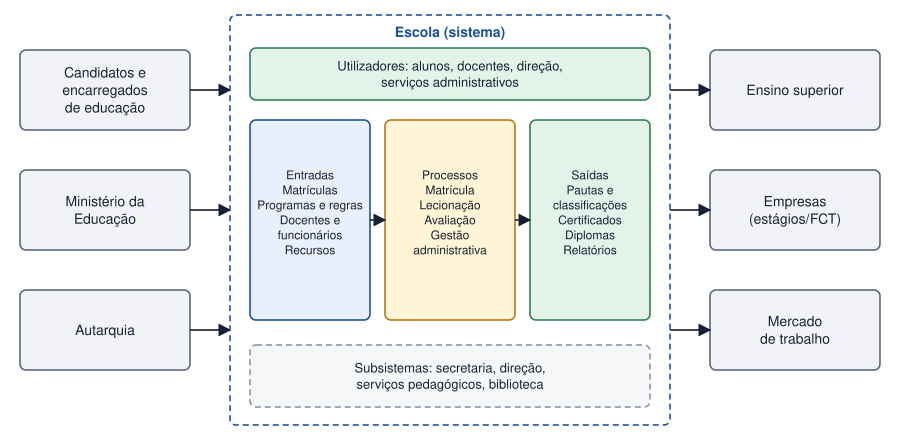

Tema 2 · Fundamentos
Sistemas, subsistemas, ambiente e fronteiras
Sistemas, subsistemas, ambiente e fronteiras do sistema
Antes de modelar o que quer que seja, é preciso decidir o que faz parte do sistema e o que fica de fora. Essa decisão condiciona todo o trabalho seguinte.
Conceitos fundamentais
| Conceito | Definição | Exemplo (escola) |
|---|---|---|
| Subsistema | Parte de um sistema que é, ela própria, um sistema, com os seus objetivos e elementos. | Secretaria, biblioteca, serviços pedagógicos |
| Ambiente | Tudo o que está fora do sistema mas com ele interage. | Ministério, encarregados de educação, empresas de estágio |
| Fronteira | Linha que separa o sistema do ambiente e define o que é controlado por ele. | O que a escola decide e gere diretamente |
| Interface | Ponto onde o sistema troca entradas e saídas com o ambiente. | Portal de matrículas, pautas, certidões |
Um sistema de informação é aberto: recebe do ambiente e devolve-lhe resultados. Mudar a fronteira altera o âmbito do projeto — se a gestão de pagamentos da cantina fica dentro ou fora do sistema da escola é uma decisão que se toma logo no início.

Como identificar a fronteira
- O que é que a organização controla, isto é, pode alterar? Fica dentro.
- O que é que apenas fornece ou recebe, sem que o possamos alterar? Fica fora e torna-se sistema externo.
- Para cada elemento externo, que informação é trocada e em que sentido?
Atividade
Analisar uma escola como sistema e identificar entradas, processos, saídas, utilizadores e sistemas externos
Analise a sua escola como um sistema.
- Liste as entradas, os processos e as saídas.
- Identifique os utilizadores (quem trabalha com o sistema) e os sistemas externos (com quem troca informação).
- Indique três subsistemas e justifique se o sistema de pagamentos online e a biblioteca escolar ficam dentro ou fora da fronteira.
Ver proposta de resolução
| Elemento | Proposta |
|---|---|
| Entradas | Candidaturas e matrículas, programas das disciplinas, regras legais, docentes e funcionários, orçamento. |
| Processos | Matrícula, constituição de turmas, lecionação, avaliação, gestão administrativa e financeira. |
| Saídas | Pautas, certificados, diplomas, relatórios para o ministério, alunos qualificados. |
| Utilizadores | Alunos, docentes, direção, serviços administrativos, encarregados de educação. |
| Sistemas externos | Ministério da Educação, autarquia, ensino superior, empresas de estágio, entidade bancária. |
| Subsistemas | Secretaria, serviços pedagógicos, biblioteca, ação social escolar. |
Fronteira: a biblioteca escolar é gerida pela escola, logo é um subsistema (dentro). O sistema de pagamentos online pertence ao banco ou a uma entidade externa; a escola apenas envia pedidos e recebe confirmações, logo é um sistema externo (fora).
Em resumo
- Um subsistema é uma parte do sistema que é ela própria um sistema.
- O ambiente é tudo o que está fora do sistema e com ele interage.
- A fronteira define o âmbito do projeto: dentro, o que se controla; fora, o que apenas fornece ou recebe.
- Os sistemas externos ligam-se ao sistema através de interfaces.